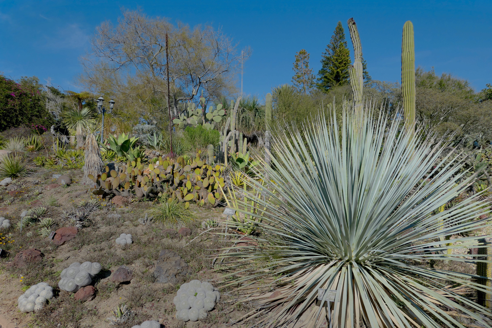

#blog #landscape
If you are a gardener and can read you will probably be interested in The Brother Gardeners: Botany, Empire and the Birth of an Obsession by Andrea Wulf. brings to life the dramas and dangers of eighteenth-century plant collecting.
Andrea Wulf could probably write and interesting autobiography. She was born India and moved to Germany as a child. She trained as a design historian at the Royal College of Art in London. However she chose to make a career of writing Botany and Gardening Books. This is the third book of her’s I’ve read. They were all delightful and interesting books which brought to life Gardening in the past and how we came to where we are today. The other books I’ve read which I heartily recommend are:
In The Brother Gardeners the author documents the rise of the Gardening Hobby in England led by a small group of 18th century naturalists that made England a nation of gardeners. The main characters:
The book is an easy read. The author’s style keeps you interested. The following is some highlights of each of the main characters:
American farmer who shipped literally tons of plants and seeds to England over the years
Bartram traveled far and wide from Virginia to New York’s Catskills To collect specimens for Collinson and the English subscribers to his shipments
Miller was a lowly nurseryman who, for much of his professional life, managed the quasi-medical Physic Garden in Chelsea.
Created the first Gardeners Dictionary The Gardener’s Dictionary. As a result he was voted into the Royal Society
Collinson was a wealthy merchant whose own story cannot really be separated from that of his New World business partner, John Bartram.
Peter was the recipient of Bartram’s parcels and an avid gardener. He organized the group of English Gardeners who paid for and shared Bartram’s plants and seeds
Collinson was the glue that held this extraordinary group of Gardeners and Botanists together.
He and Bertram although they never met each other in person became the closest friends and grew old together.
He was the first to die in 1768
His return from Endeavour's transglobal expedition turned Banks into an overnight sensation with the 18th-century equivalent of rockstar status. Aided by his great Swedish friend and collaborator, Daniel Solander, and backed by huge wealth based on estates in Lincolnshire, Banks became the pivot on which revolved the entire British botanical establishment.
He also became President of the Royal Society which he held for over 40 years. He did much to spread the knowledge of Botany throughout the World and to make the Sun never set on the British Empire
His accomplishment spread out far from Botany. For example he imported Spanish Sheep, breed them with English sheep, and exported them to Australia. They became the famed Merino Sheep.
The ship manned by Captain Cook and his crewed sailed around the World.
The voyage lasted from 1768 to 1771.
Two goals: observe the Transit of Venus in Tahiti and discover the fabled Great Southern Continent.
Transits were needed in order to calculate the distance of the Earth from the Sun
Joseph Banks and Daniel Solander sailed with the Endeavor to search out fauna and flora. They were allowed on the voyage because Banks in large part financed the trip.
Main stops were:
Swedish botanist, zoologist, and physician who formalized binomial nomenclature, the modern system of naming organisms. He is known as the "father of modern taxonomy
His classification method is still used today but at the time was considered scandalous because it was based on the plant’s sex organs - stamens and pistils.
Now that we have DNA will we reclassify plants based on DNA?
After his tour through Europe he returned to Sweden where he eventually became a professor at the University of Uppsala.
While there he used a group of volunteers to collect and classify all plants which he published as the Species Plantarum
Species Plantarum (Latin for "The Species of Plants") is a book by Carl Linnaeus, originally published in 1753, which lists every species of plant known at the time, classified into genera. It is the first work to consistently apply binomial names and was the starting point for the naming of plant
Disciple who Linnaeus sent to England. Much to Linnaeus’ dismay he stayed in England and became one of the first employees of the British Museum cataloging Han Sloane’s vast collection of dried plants, insects, and minerals
If you are counting Robert is number seven and I said there were only six. He was like the Candle in the Wind popularized by Elton John. The book would have included seven but he died at the tender age of 30.
The Eight Baron of Petre. He inherited “Thorndon” at the age of 19 and devoted his life to transforming his estate as a showcase to American Plants in England.
He was the biggest customer of John Bartram. His zeal was so intense he even raised large mounds in the Northern part of his Estate to mimic the Appalachians that Bartram had described in great detail
Both Miller and Collinson were mentors for Petre.
Most unfortunate he died of smallpox at the tender age of 30
#book #nature #trees
The Overstory - the Wisdom of Trees. By Richard Powers- Wow, what a story! Easily my book to the year unless, of course, something better pops up on my reading list this year. A story about trees, no a story about the Planet, no a story about Nature, no a story about the eight main characters whose lives are related in one way or the other due to trees.
The book is split into four sections, Roots, Trunk, Crown and Seeds. Roots spreads itself out across eight very different lives, extended short stories, each of which hinges, in some way, on a character’s relationship to trees.
The over arching message from the book: Nature will outlast man on the Planet and recover.
Reading book was an almost “spiritual” experience for me. You can’t read this book without viewing trees differently. Unless your very hedonistic you view the Planet and Nature very differently. And just maybe if your very lucky you realize Nature is nothing but chemistry, biology, and physics. There is nothing special in Nature about Man. Long after we are extinct Nature will be humming along healing the Planet from our excesses.
The book won the Pulitzer Prize for fiction in 2019.
#book #idea
After my third reading of GEB in the past 20 years I’m still not sure what the book is about? What’s the point? Here’s a diagram of general flow of the book:

Godel’s Theorem certainly plays a major role. That is, you can’t be certain of anything if you extend it beyond Number Theory. Formal Number Theory comprises much of the tome.
Just when I think I’ve nailed it he branches off into Bach’s Fugues. Apparently Bach accomplished the impossible when he composed 8 part Fugues.
Then there is Escher’s Drawings with their Strange Loops - another subject which delights the author.
Of course what book would be complete without a course on Molecular Biology that branches off into Brains.
Hofstadter’s main theme: To suggest ways of reconciling the software of the mind with the hardware of brain is a main goal of this book
In the final analysis the book is about uncertainty from Math, to music, to art, biology, to DNA, to brain functions.
The author covers so many subjects I can’t do justice to them all or any of them as a matter of fact. Therefore, I’m just listing a handful of the major topics
Although they are gripped together Godless actually authored two theorems
Any consistent formal system F within which a certain amount of elementary arithmetic can be carried out is incomplete; i.e., there are statements of the language of F which can neither be proved nor disproved in F.
And
For any consistent system F within which a certain amount of elementary arithmetic can be carried out, the consistency of F cannot be proved in F itself.
Escher's work features mathematical objects and operations including impossible objects, explorations of infinity, reflection, symmetry, perspective, truncated and stellated polyhedra, hyperbolic geometry, and tessellations.
A main theme of the book. What does it mean: “Given two groups there is a corresponding or similar in form and relations”
A main theme of this book. A strange loop is a cyclic structure that goes through several levels in a hierarchical system. It arises when, by moving only upwards or downwards through the system, one finds oneself back where one started. Strange loops may involve self-reference and paradox.
Escher’s art works are a good example of a strange loop.
In Newtonian Physics with more than two bodies the exact orbits cannot be exactly determined (a poor plain English definition). A popular example of the problem is the Sun, the Earth, and the Moon. The three body problem is a special case of the “n” body problem. Actually for all practical purposes the three body and “n” body problems have been solved.
A monk asked Master Chao-chou, "Has a dog the Buddha Nature or not?" Chao-chou said, "Mu!"
It always takes longer than you expect, even when you take into account Hofstadter's Law.
DNA —> RNA —> proteins
#opinion
I was listening to the radio this morning, for the younger crowd it’s a legacy system that converts audio to RF and transmits the RF through the atmosphere. The RF is received by the device named radio and converted back into audio.. Gypsy by Fleetwood Mac was playing. I was struck by the beauty of combination of voice and instruments; started me thinking about creativity.
From what I understand the Stevie Nicks created the voice part alone one night on the floor of a Florist Shop. She was homeless and had convinced the Owner to let her camp out there in exchange for being sort of a night watch woman. Then sometime later she had joined Fleetwood Mac the group put it to music. Of course they recorded the song in a studio with much help and direction from the producer (not sure of the right term here).
The result was a work of beauty as far as I was concerned - especially the music. I don’t know the words but I love the voice. However, I must add I’m more of a sound person than a voice person. I don’t know more than a word or two of some of my favorite tunes.
All this leads me to the question “Why are some people so artistically creative and others like me (Engineers) are what I guess you call creative but in a totally different direction?” Why can I develop a digital signal processing (DSP) algorithm on a computer but can’t hold a tune let alone create one? I guess I should be happy we are all created differently and not worry about what I can’t do?
#book
Finished The Club by Leo Damrosch this morning. 399 pages. The Club is a group meeting on Friday nights at Turk's Head Tavern to mostly discuss almost every subject under the Sun but also to eat and drink.
Before starting the book I imagined much of the story would be about their Friday Night discussions. But not one Friday night event was documented in the book. Rather the story whirled around the lives of the Club's members who for the most part were the giants of the literary, artistic, academic, and political community - basically the leaders or their age minus the Monarchy.
The Club centers around the literary giant Samuel Johnson and James Boswell., the man who immortalized his words of wisdom. Other members included Adam Smith, Edmund Burke, Edward Gibbon, and Joshua Reynolds. They and others warranted their own chapter in the Book.
As well as learning more about these men and women I also gained much insight into Life in general during that Age. I’m really glad doctors don’t lay hot coals on my back to produce blisters from which “evil humors” can be drained.
#blog #travel #california
.
We took a short holiday in San Diego the latter part of January this year to escape the cold weather. As it turned out the Dallas weather was very warm this January but San Diego was still better.
Jan 26, 2020 at 9:03 PM: Flight to San Diego was on time and smooth. Can’t ask for much more on a plane flight.
Lunch at Liberty Market. Similar to Legacy Hall in that it has many small food stalls. Very good and close to the Airport.
Checked into the Wyndham Harbor Lights and rested for awhile.
Walked to The Nolan, a rooftop bar close to the Harbor for a drink and mid-afternoon snack.
Back to the hotel for awhile
Walked to Ironsides Fish and Oyster House in Little Italy for dinner. Sat down and the gentleman and lady next to us asked “Were you at The Nolan this afternoon?” Turns out they sat next to us. We had an enjoyable conversation during dinner. It’s a small World Charlie Brown. Dinner was excellent topped off by top notch cappuccino and espresso
Jan 27, 2020 at 8:24 PM: Exercised at OTF this morning and then bagels.
Drove the back roads to La Jolla and had lunch at George’s on the Cove Terrace overlooking the Pacific. Breathtaking view and Excellent food and drink. Could have stayed there all day.
Next we walked around stopping at a couple of galleries
Then we walked down to the Children’s Pool, a sheltered cove on the beach constructed in the 30s so the local children would have a safe area to swim in the Pacific free from the surf. The cove was created by building a curved wall into to the ocean. Turns out the local seals found the cove and congregate there to catch some rays on the beach making the Pool a great place to watch the seals.
Then back to the hotel for an hour or two.
Late afternoon we drove out to Pacific Beach and strolled along the Boardwalk as the Sun set over the horizon.
Last stop was the Backyard which is a Pacific Beach Sports Bar. Cool interior and patio but average Sports Bar fare
Jan 28, 2020 at 4:09 PM: Exercised this morning. It was a tough one. After exercising came to the rental and discovered a parking ticket on my windshield for $42.50 because I forgot to put money in the meter — STUPID.
So bagels at Panera’s again for breakfast to save money.
Decided to visit the San Diego Botanical Garden today in Encinitas. On the way we stopped at Las Olas on the beach in Encinitas. Great Mexican Food! Then off to the Botanical Garden. Most of the plants were from the Arid Regions of the Planet. Very interesting even in January.
Jan 28, 2020 at 8:26 PM: Dinner at Cucina Urbana. No its not near the University of Illinois. It's in San Diego and very good Italian. 5 stars in my book.
Jan 29: No exercise today. Breakfast at Brian’s 24. Good ratings and reviews. Brian must have been flooding Internet with reviews because the restaurant was mediocre to say the best
Spent the day at Balboa Park in the Museum area. We bought the 1 day Explorer pass for $48 a piece which gets us admission to 5 of the 17 museums and the iMax if we visit the Science Discovery Center as one of the museums. Did not know how long we would be there but we ended up leaving as they closed the museums at 5PM. By the time we arrived we were hungry so before we visited the museums we grabbed a bite to eat at Panama 66 - Open air sandwich and craft beer location. Very good.
The 5 museums were:
Topped off the day by dining at Searsucker. Good but minimal mains menu but lot of starters.
A word about our Time Share - Great location and up to date room. For some reason they were very low key trying to get us to listen to their salesperson. Maybe all Timeshares have the same model and maybe they don’t, However Wyndham’s is you buy shares in a resort. You receive “points” which you an use at any resort. Every time you stay at a property they want you to visit the Welcome Center whose purpose is to get you to signup for a free Information breakfast. Turns out in every case its really an attempt to get you to buy more shares in a Wyndham Property so you can have more “points”. I always turn them down.
Jan 30, 2020 at 9:18 AM: At the airport ready to fly home
For more photos Click Here

I'm Marv Olson. I'm a retired Systems Engineer now living the 7 day weekend. I enjoy volunteering for the Collin County Master Gardener's, photography, traveling, developing/maintaining web applications, learning, and watching the grandkids approach adolescence and beyond for a couple of them.
For what I'm currently thinking or doing check back here
| Goals (October - December) |
|---|
| Take MIT Geology Course |
| IC Replan 2020 tasks |
| Finish back of pool landscaping |
| Habits |
|---|
| Ride Bike 52 times |
| Weigh less than 220 |
| Learn Habit |